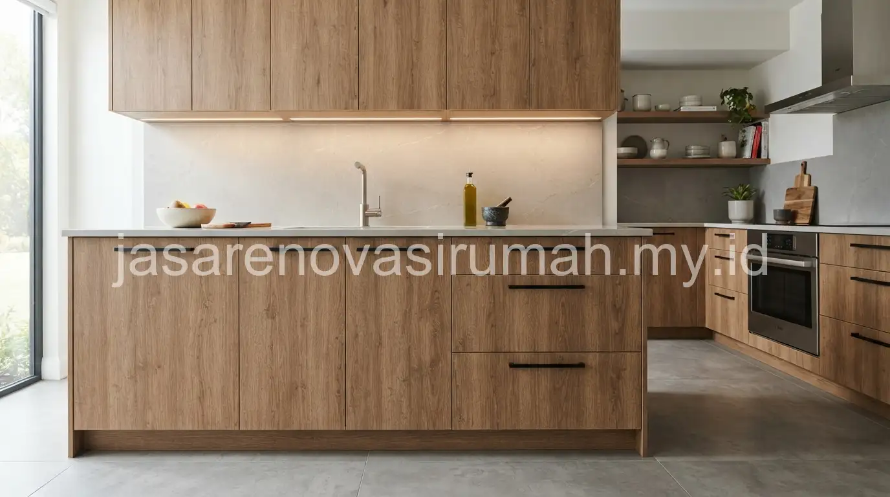

Jasa desain interior Surabaya kini menangani dua kebutuhan yang cukup berbeda, yakni penataan rumah mewah dengan ruang yang luas dan detail material premium, serta apartemen minimalis yang menuntut efisiensi tata letak pada unit berukuran terbatas. Salah satu andalan yang sering dipercayakan pada proyek residensial di Surabaya adalah kitchen set berbahan multiplex lapis HPL dengan perlakuan anti-rayap, mengingat kondisi iklim kota ini yang cukup lembap dan panas sepanjang tahun.
Apa Perbedaan Pendekatan Desain Interior untuk Rumah Mewah dan Apartemen Minimalis?
Desain interior rumah mewah berfokus pada detail material premium dan ruang khusus seperti walk-in closet atau home bar, sementara apartemen minimalis lebih menekankan efisiensi tata letak agar unit berukuran terbatas tetap terasa fungsional.
Berikut perbandingan pendekatan yang biasa diterapkan pada kedua jenis hunian tersebut:
| Aspek | Rumah Mewah | Apartemen Minimalis |
|---|---|---|
| Fokus utama | Detail material dan ruang khusus | Efisiensi tata letak dan penyimpanan |
| Luas area kerja | Umumnya luas, banyak ruang terpisah | Terbatas, sering open plan |
| Material yang dipilih | Marmer, kayu solid, logam finishing premium | Multiplex HPL, material ringan dan ekonomis |
| Furniture | Custom detail dengan ukiran atau desain khusus | Multifungsi, hemat ruang |
Pada rumah mewah, desainer biasanya memiliki keleluasaan lebih besar untuk mengeksplorasi detail visual, sementara pada apartemen minimalis, setiap keputusan desain harus benar-benar mempertimbangkan efisiensi ruang gerak penghuni, mengingat luas unit yang jauh lebih terbatas dibanding rumah tapak.
Mengapa Kitchen Set Berbahan Multiplex Lapis HPL Anti-Rayap Cocok untuk Iklim Surabaya?
Multiplex lapis HPL dengan perlakuan anti-rayap dipilih karena mampu menahan kelembapan dan risiko serangan rayap yang cukup tinggi di Surabaya, sekaligus tetap menawarkan tampilan yang rapi dan tahan lama.
Beberapa keunggulan kitchen set multiplex HPL anti-rayap untuk kondisi iklim Surabaya:
- Lapisan HPL yang tahan air membuat permukaan kitchen set tidak mudah rusak akibat kelembapan dapur.
- Perlakuan anti-rayap pada multiplex mengurangi risiko kerusakan struktur kabinet akibat serangan rayap yang umum terjadi pada furniture kayu di daerah panas dan lembap.
- Pilihan motif HPL yang beragam tetap memungkinkan tampilan kitchen set terlihat modern meski menggunakan material yang lebih tahan terhadap kondisi iklim tropis.
- Bobot multiplex yang lebih ringan dibanding kayu solid memudahkan proses instalasi, terutama untuk unit apartemen di lantai atas.
Pertimbangan ketahanan material terhadap rayap ini sejalan dengan tantangan renovasi secara umum di Surabaya, seperti dibahas pada panduan jasa kontraktor renovasi Surabaya, yang juga menyoroti pentingnya solusi material tahan rayap pada berbagai elemen bangunan, tidak hanya pada furniture interior.

Bagaimana Proses Pengerjaan Interior dari Survey hingga Instalasi di Lokasi?
Proses pengerjaan interior dimulai dari survey dan pengukuran ruangan, penyusunan konsep desain, produksi furniture di workshop, hingga instalasi akhir yang disesuaikan dengan kondisi lokasi sebenarnya.
Berikut tahapan umum yang dijalani dalam proyek desain interior residensial:
- Survey lokasi untuk mengukur dimensi ruangan dan mencatat kondisi eksisting seperti posisi jalur listrik dan air.
- Diskusi kebutuhan fungsi ruang dan preferensi gaya, baik untuk rumah mewah maupun apartemen minimalis.
- Penyusunan layout plan dan visualisasi desain untuk disetujui bersama klien.
- Produksi furniture custom di workshop sesuai spesifikasi material yang dipilih, termasuk kitchen set HPL anti-rayap.
- Instalasi furniture dan finishing akhir di lokasi oleh tim teknisi berpengalaman.
Proses survey pada tahap awal menjadi krusial khususnya untuk proyek apartemen, karena akses masuk unit dan jalur pengangkutan furniture besar sering menjadi kendala tersendiri yang perlu diantisipasi sejak awal perencanaan, berbeda dengan rumah tapak yang umumnya memiliki akses lebih leluasa.
Apa Saja Tantangan Khusus Mendesain Interior untuk Apartemen di Surabaya?
Tantangan utama mendesain interior apartemen adalah keterbatasan luas unit, akses lift dan tangga yang membatasi ukuran furniture, serta kebutuhan penyimpanan yang tetap harus terpenuhi meski ruang gerak minim.
Beberapa strategi yang biasa diterapkan untuk menjawab tantangan ini:
- Menggunakan furniture modular yang bisa dibongkar dan dirakit ulang di dalam unit, mengingat furniture berukuran besar sering tidak bisa masuk melalui lift standar.
- Memaksimalkan penyimpanan vertikal hingga mendekati plafon untuk mengoptimalkan kapasitas simpan tanpa menambah luas lantai.
- Memilih furniture multifungsi, seperti sofa bed atau meja lipat, untuk unit studio atau tipe satu kamar tidur.
- Mempertimbangkan warna terang dan pencahayaan yang memadai agar unit apartemen tetap terasa lapang meski berukuran kompak.
Pendekatan berbeda ini menunjukkan bahwa desain interior apartemen membutuhkan kreativitas tersendiri dibanding rumah mewah yang memiliki keleluasaan ruang lebih besar untuk bereksplorasi secara visual maupun fungsional.
Baca Juga: 15 Desain Rumah Minimalis Modern Tren 2026
Bagaimana Menentukan Anggaran Desain Interior Sesuai Jenis Hunian?
Anggaran desain interior sebaiknya ditentukan berdasarkan skala ruangan yang akan dikerjakan dan tingkat kustomisasi furniture yang diinginkan, bukan disamakan begitu saja antara proyek rumah mewah dan apartemen minimalis.
Proyek rumah mewah dengan material premium dan furniture custom detail tentu membutuhkan anggaran yang jauh lebih besar dibanding proyek apartemen minimalis yang mengutamakan efisiensi biaya dan fungsi. Sebelum menentukan anggaran, ada baiknya pemilik hunian menyusun daftar prioritas ruangan yang ingin dikerjakan lebih dulu, terutama jika proyek dilakukan secara bertahap karena keterbatasan anggaran pada satu waktu.
Kesalahan Umum Saat Menggunakan Jasa Desain Interior untuk Hunian di Surabaya
Kesalahan yang paling sering terjadi adalah tidak mempertimbangkan ketahanan material terhadap iklim lembap dan risiko rayap, sehingga furniture yang terlihat bagus di awal justru cepat rusak dalam beberapa tahun pemakaian.
Kesalahan lain yang perlu dihindari:
- Memilih furniture berukuran besar tanpa mengecek akses masuk unit apartemen terlebih dahulu.
- Tidak melakukan survey lokasi secara langsung sehingga hasil akhir tidak sesuai dengan kondisi ruangan sebenarnya.
- Mengabaikan kebutuhan ventilasi dan sirkulasi udara demi mengejar tampilan estetika semata.
- Terlalu banyak mengubah desain di tengah proses produksi furniture, yang berpotensi menambah biaya dan waktu pengerjaan.
Pada akhirnya, baik untuk rumah mewah maupun apartemen minimalis, jasa desain interior Surabaya yang tepat adalah yang mampu menyeimbangkan estetika, fungsi, dan ketahanan material terhadap kondisi iklim setempat. Tim kami siap membantu mulai dari survey lokasi gratis, konsultasi konsep, hingga produksi dan instalasi kitchen set multiplex HPL anti-rayap serta furniture custom lainnya sesuai kebutuhan hunian Anda di Surabaya.

Ainur Reza
Penulis Profesional & Praktisi Konstruksi
Ainur Reza adalah seorang penulis profesional yang memiliki ketertarikan mendalam pada dunia arsitektur dan konstruksi. Dengan pengalaman bertahun-tahun mengamati tren renovasi rumah, ia aktif membagikan panduan praktis, tips RAB, dan wawasan seputar material bangunan untuk membantu pemilik rumah mewujudkan hunian impian mereka dengan anggaran yang efisien.